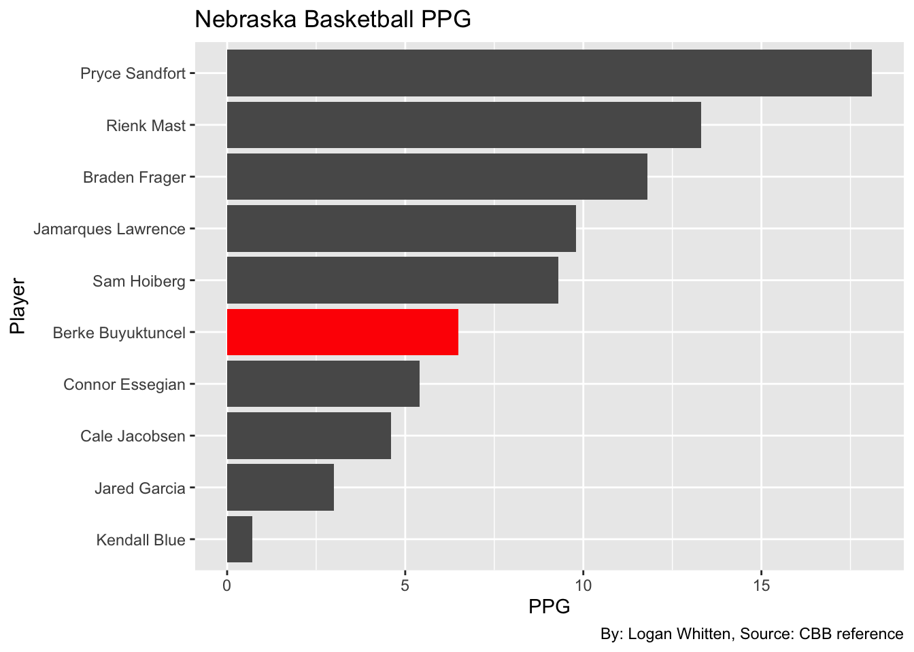
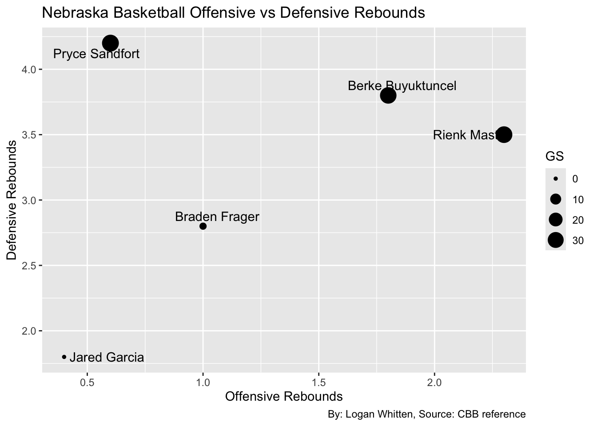

Code
library(tidyverse)
library(gt)
library(ggrepel)Logan Whitten
April 23, 2026
This offseason, fan-favorite Husker Berke Buyutkuncel transferred to Vanderbilt, a move that left many fans upset and shocked as Berke was a key contributor on the best team in school history, or so most people think.
bballunl<-read_csv("project2data.csv")
bballrelevant<- bballunl |> filter(G > "17")
Berke <- bballrelevant |>
filter(
Player == "Berke Buyuktuncel"
)
huskerforwards <- bballrelevant |>
filter(Pos == "F")
allplayers <- read_csv("https://mattwaite.github.io/sportsdatafiles/players26.csv")
BIGforwards <- allplayers |>
filter(Pos == "F", Conference == "Big Ten MBB", PER > "0")
Fstats <- BIGforwards |>
select(Player, Summary) |>
arrange(desc(Summary)) Let’s start by looking at how much Berke scored per game compared to the rest of the team.

As we can see here, Berke is in the bottom half in terms of points per game on the team, despite being a full time starter, and he’s even surpassed by sixth man, and fellow forward Braden Frager.
But points aren’t the only thing we should be looking at. One of the most valuable assets for players of Berke’s size and position of forward is the ability to go up and get rebounds. Let’s take a look at those stats
ggplot() +
geom_point(data = huskerforwards, aes(x=ORB, y=DRB, size = GS)) +
geom_text_repel(data = huskerforwards, aes(x=ORB, y=DRB, label = Player)) +
labs(x="Offensive Rebounds", y="Defensive Rebounds", title = "Nebraska Basketball Offensive vs Defensive Rebounds", caption = "By: Logan Whitten, Source: CBB reference") 
So Berke is good at rebounding, but not great. He lags behind Pryce Sandfort in terms of offensive rebounding, and is not as efficient as Rienk Mast in terms of rebounding on the defensive end, leaving Berke stuck in the middle in terms of efficiency on the board.
So we’ve compared Berke’s stats to the rest of the team, but how does he compare to the rest of the conference at the forward position.
Fstats |> slice(1:15) |> gt() |> cols_label( Summary = "Stats per Game" ) |> tab_header( title = "BIG ten forwards stats per game" ) |> tab_style( style = cell_text(color = "black", weight = "bold", align = "left"), locations = cells_title("title") ) |> tab_source_note( source_note = md("By: Logan Whitten | Source: Matt Waite CBB Stats") ) | BIG ten forwards stats per game | |
| Player | Stats per Game |
|---|---|
| Solomon Washington | 9.7 Pts, 9.2 Reb, 0.7 Ast |
| Jacob Cofie | 9.6 Pts, 7.3 Reb, 1.9 Ast |
| Ivan Juric | 9.4 Pts, 5.1 Reb, 0.8 Ast |
| Reed Bailey | 9.3 Pts, 4.1 Reb, 1.3 Ast |
| Elijah Saunders | 9.2 Pts, 4.4 Reb, 0.7 Ast |
| Amare Bynum | 9.1 Pts, 4.8 Reb, 1.1 Ast |
| Bobby Durkin | 9.0 Pts, 2.9 Reb, 1.8 Ast |
| Austin Rapp | 8.4 Pts, 3.6 Reb, 1.7 Ast |
| Alvaro Folgueiras | 8.2 Pts, 3.7 Reb, 1.9 Ast |
| Tre Singleton | 8.0 Pts, 5.3 Reb, 1.6 Ast |
| Berke Buyuktuncel | 7.4 Pts, 6.1 Reb, 2.3 Ast |
| Sean Stewart | 7.4 Pts, 5.6 Reb, 0.9 Ast |
| Brandon Noel | 7.4 Pts, 4.1 Reb, 1.0 Ast |
| Zvonimir Ivisic | 7.2 Pts, 4.9 Reb, 0.3 Ast |
| Sam Alexis | 7.1 Pts, 4.8 Reb, 1.1 Ast |
| By: Logan Whitten | Source: Matt Waite CBB Stats | |
I decided to combine PPG, rebounds and assists for a total measure of efficiency So we see here that Berke is 11th among B1G forwards in those categories, which again is good, but not great and is very replaceable with the amount of talent that enters the portal each year.
In conclusion, although the loss will be felt in terms of personality and the fan’s enjoyment of Berke’s time here, the actual play on the court is very replaceable and should not affect the Huskers hopes for another title push this year.